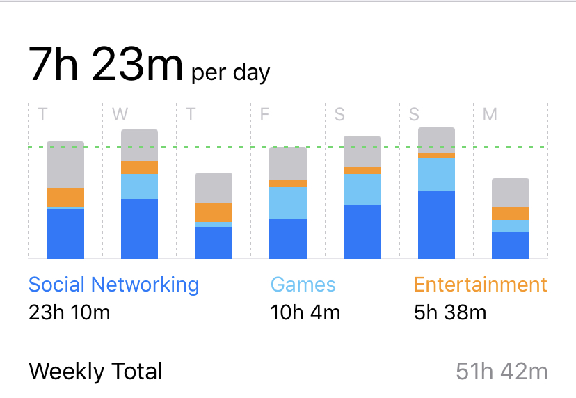
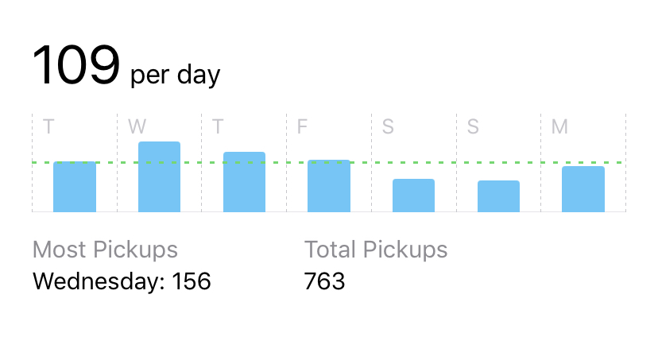
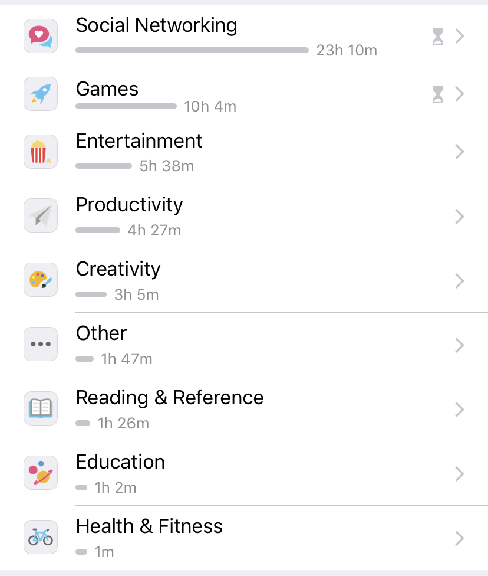

Welcome to Kayla's Website
Topic: Kayla's Phone Log
On the iPhone XR the phone automatically tracks your usage for each week
A new cycle begins every Sunday. My goal is to reduce the number of hours each week.
For the creation of this website, I will chart the number of hours
I spend on my phone in a week.
Last Week Average Screen Time per day: 7 Hours and 23 minutes

Total Pickups: 763
Number of Pickups per a day: 109

Popular Usage Time from Last Week
